| SOURCE | TITLE| IMAGE MATCH | click to source page |
| Find Your Stamps Value | Value of polska butterfly stamps | 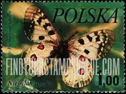 |
| HipStamp | Poland Stamp:1977 Colorful-Beautiful-Lovely Butterfly Used-Large Size Stamps | Europe - Poland, Stamp / HipStamp | 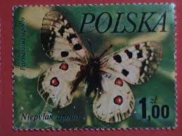 |
| Dreamstime.com | Apollo (Parnassius Apollo), Butterflies Serie, Circa 1977 Editorial Stock Photo - Image of mail, postal: 135417348 | 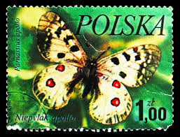 |
| Dreamstime.com | Butterfly on Mountain Peak at Sunset Stock Photo - Image of horizon, wildlife: 314627794 | 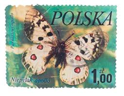 |
| eBay | Parnassius for sale | eBay | 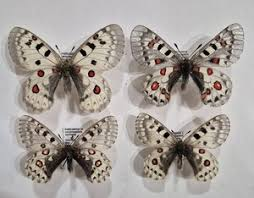 |
| eBay | HyGrade 20 Butterflies Genuine Postage Stamp International Stamps Set Sealed New | eBay | 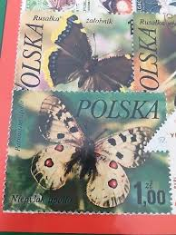 |
| Wikipedia | Parnassius davydovi - Wikipedia | 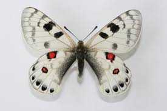 |
| eBay | Parnassius Apollo | eBay | 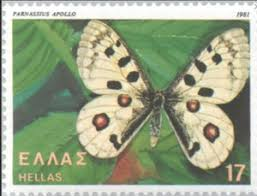 |
| eBay | Parnassius | eBay | 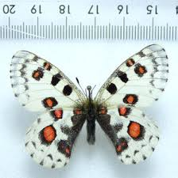 |
| Wikipedia | Parnassius phoebus - Wikipedia | 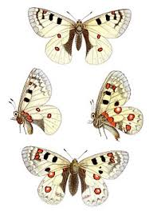 |
| biomes.be | Parnassius orleans F – Biomes | 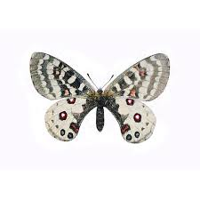 |
| eBay | Butterflies of Transcaucasia 1988 Vintage Postcards. Set of 18 pcs | eBay | 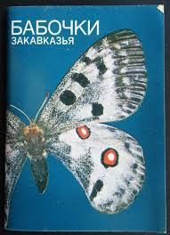 |
| Barcode of Life Data System (BOLD) | BOLD Systems: Taxonomy Browser - Parnassius {genus} | 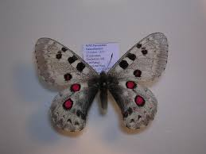 |
| And here are the other Parnassius of my collection. Could you help me identify them with recent classification. Let me know if some are rare. Thanks a lot ! | 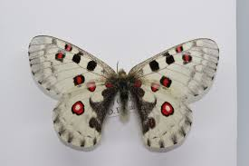 | |
| iNaturalist Canada | Nevada Smintheus (Subspecies Parnassius smintheus sayii) · iNaturalist Canada | 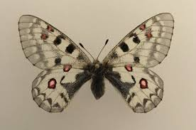 |
| Nature's ballerinas, performing in the garden | 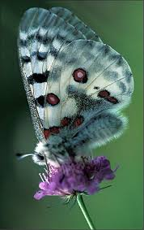 | |
| Insects of Iowa | Phoebus Parnassian (Parnassius phoebus) Specimens - Insects of Iowa | 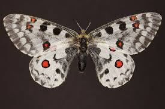 |
| butterfliesofbulgaria.net | Butterflies of Bulgaria - Parnassius apollo | 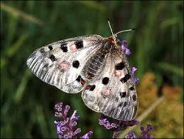 |
| vpuniyal.com | HIGH-ALTITUDE BUTTERFLY FAUNA OF GANGOTRI NATIONAL PARK, UTTARAKHAND: PATTERNS IN SPECIES, ABUNDANCE COMPOSITION AND SIMILAR | 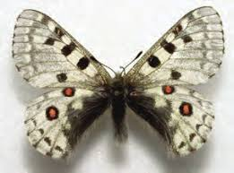 |
| turtlepuddle.org | Butterflies of Alaska | 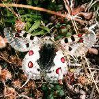 |
| Etsy | 3" X 3" Butterfly Framed, PARNASSUS NOMION (china) Butterfly Display, Framed Butterflies, Mounted Butterflies, Art, Preserved Butterfly - Etsy | 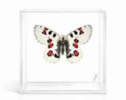 |
| YouTube | Hike in Val Venegia with DailyGreenspiration - YouTube | 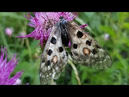 |
| Flickr | Petit Apollon | Pose pour la phhoto | Lise-44 | Flickr | 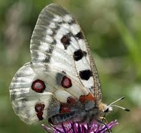 |
| Lost and loved | Vintage Butterfly Print, Parnassius Apollo – Lost and loved | 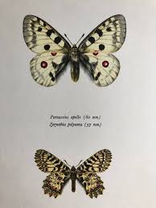 |
| Pensoft Publishers | European Butterflies.indb | 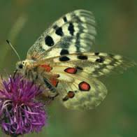 |
| iNaturalist | Apollos (Genus Parnassius) · iNaturalist | 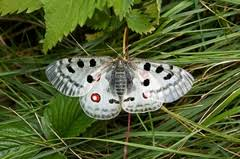 |
| Science Source | Apollo Butterfly Kids T-Shirt by Tierbild Okapia - Science Source Prints | 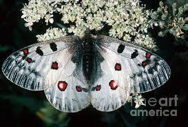 |
| Freepik | White butterflies with orange spots isolated on white, parnassius nordmanni male and female macro | Premium Photo | 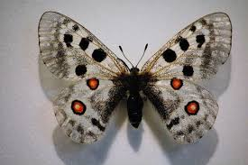 |
| silviareiche.com | Nature and wildlife photo gallery Silvia Reiche, natuurfotografie, vlinderfotografie, foto, fotos, spinnen, kevers, bloemen, paddenstoelen, natuurgebieden in Nederland, - Butterfly & Nature Photography by Silvia Reiche | 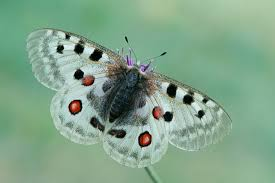 |
| APKPure | Flora Helvetica APK for Android Download | 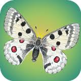 |
| insectaworld.com | Papilionidae, Parnassius nomion Fischer von Waldheim, 1823 | 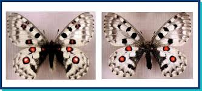 |
| ИЦиГ СО РАН | Lepidoptera of Siberia and Central Asia | 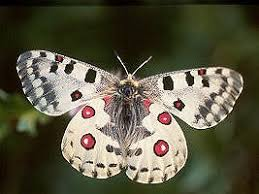 |
| Oxford University Press | Genomics of the relict species Baronia brevicornis sheds light on its demographic history and genome size evolution across swall | 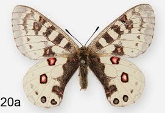 |
| World of Butterflies and Moths | Parnassius nomion nomius CHINA A- (#02) - World of Butterflies and Moths | 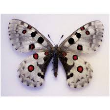 |
| Montana.gov | Rocky Mountain Parnassian - Montana Field Guide | 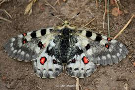 |
| ProBoards | Parnassius help | The Insect Collectors' Forum | 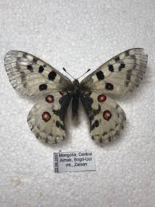 |
| parnassius-apollo.life | The benefits of grazing for Parnassius apollo (Part 1) - Parnassius apollo project LIFE Apollo2020 | 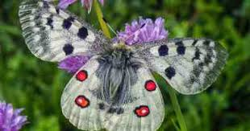 |
| Butterfly Planet | Parnassius nomion koiwayae M A1 Qinghai, China - Butterfly Art Inc. | 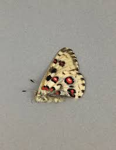 |
| ÖSVLPH | Category: Nicht kategorisiert - ÖSVLPH | 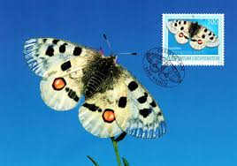 |
| Sedna Fuentes (nylades2016) - Profile | Pinterest | 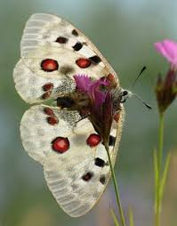 | |
| Vecteezy | a white butterfly with red eyes sitting on some pink flowers 37316600 Stock Photo at Vecteezy | 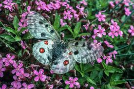 |
| Wikimedia.org | Parnassius (Parnassius) - Wikispecies | 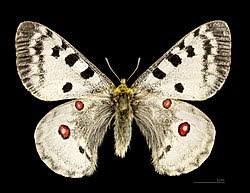 |
| BioLib | Parnassius epaphus (Common Red Apollo) | BioLib.cz | 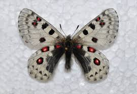 |
| Adobe | Apollo Butterfly - Parnassius apollo, beautiful iconic endangered butterfly from Europe, Stramberk, Czech Republic. Stock Photo | Adobe Stock | 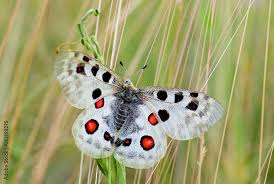 |
| Flickr | Parnassius apollo | *** | Claudio Ghizzo | Flickr | 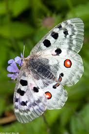 |
| Convention on Biological Diversity | Friends of Target 12 will | 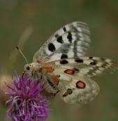 |
| nomadmongolia.com | The trip for collecting insects in Mongolia CITES permission is issued to insects collected . | 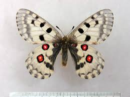 |
| carolinekannreuther.com | carolinekannreuther | 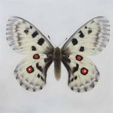 |
| eBay | PARNASSIUS EPAPHUS EPAPHUS pair | eBay | 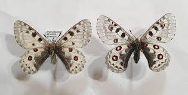 |
| The Insect Collector | TheInsectCollector | 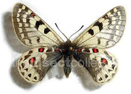 |
| oldantiqueprints.com | Antique Prints & Drawings | Butterfly - Parnassius | Chromolithography | 1911 |  |
| Scribd | Moszkowski | PDF | |
| Wikimedia.org | File:Parnassius-Apollo-MontañaPalentina Spain.jpg - Wikimedia Commons | |
| Pin by Jennie Joyce on Butterflies & Moths | Butterfly art, Beautiful butterfly photography, Insect art | ||
| 20MegsFree | A1 ] DESIGNATION | |
| Linda Park, MBA - Director of Finance and Administration - Museum of Natural History- University of Colorado Boulder | LinkedIn | ||
| The Insect Collector | TheInsectCollector | |
| Wikipedia | Parnassius smintheus – Wikipédia, a enciclopédia livre | |
| butterflyidentification.com | Apollo Butterfly: Identification, Facts, & Pictures |
{kind=link}